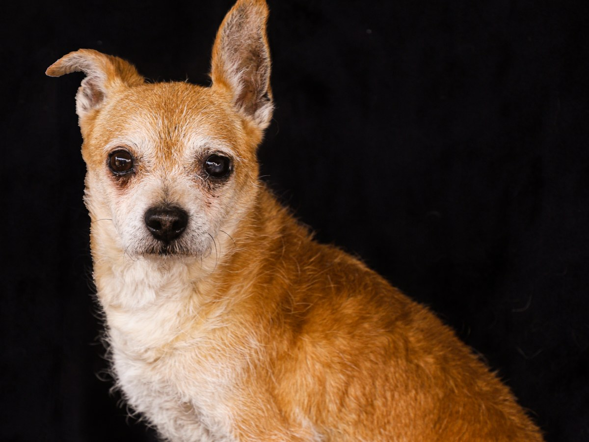
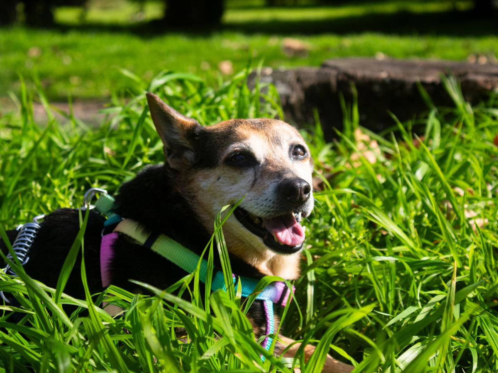
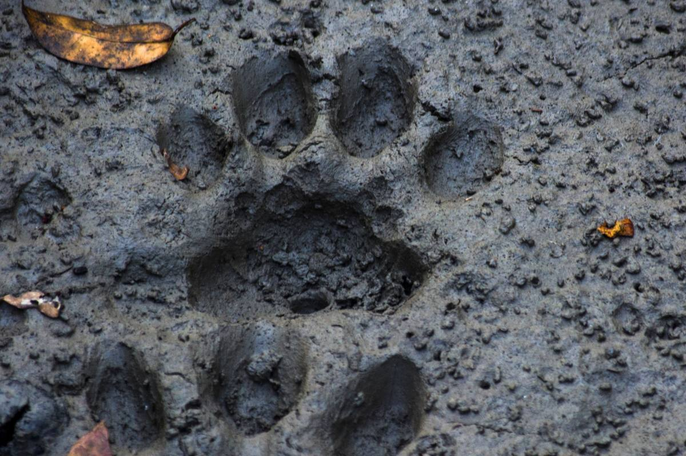
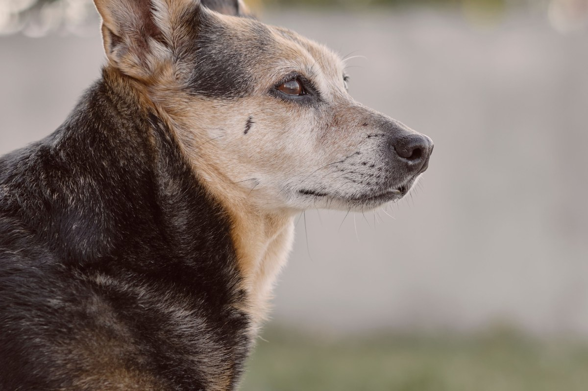

La Florida · Walker Martínez 2051
¿Con quién tengo que ir?
Una clínica veterinaria abierta los siete días, con especialidades.
- 327reseñas en Google
- 4,7de nota promedio
- 3.526seguidores en Instagram
- 0sitios activos: su dominio está suspendido
Por especialidad
¿Con quién tengo que ir?
Mire dónde está la molestia. Y llame con eso.
- DIENTES
Odontología
Mal aliento o no quiere masticar.
- CONDUCTA
Etología
Miedo, rompe todo o no se calma.
- POR DENTRO
Imágenes
Cojea o le duele al tocarlo.
- PABELLÓN
Cirugía
Cuando lo indica la consulta.
Cada caso lo evalúa la clínica en consulta.

Cada molestia tiene a quién preguntarle.
En Walker Martínez 2051
Lo que hay en Tierra Animal
-
Lo que la distingue
Odontología
Con radiografía dental.
-
Para empezar
Consulta
Y vacunas.
-

Por dentro
Radiografías
Y ecografía.
-
Conducta
Etología clínica
Para el miedo y el estrés.
-
En pabellón
Cirugía
También maxilofacial.
-

Siete días
Hasta las 20
De lunes a viernes.
Servicios de su AgendaPro y su Instagram; horario de AgendaPro.

327 reseñas y un 4,7.
Walker Martínez 2051, La Florida
Tierra, hoja y huella
Un día en la clínica




Fotos de referencia: ninguna es de la clínica.
Dónde estamos
Walker Martínez 2051, La Florida
- Lunes a viernes
- 10–20
- Sábado
- 10–19:30
- Domingo
- 10:30–19
- Teléfono
- (2) 2792 1143
Local 13. Instagram: @veterinariatierraanimal.
Walker Martínez 2051, local 13 Abrir en Google Maps
Para el dueño
Qué es real y qué falta
Lo verificado
Dirección, teléfono, horario y servicios de su AgendaPro, las 327 reseñas y su Instagram.
Lo de ejemplo
La guía por especialidad y las fotos.
Lo que falta
El equipo, un celular con WhatsApp y reactivar el dominio con su nombre.